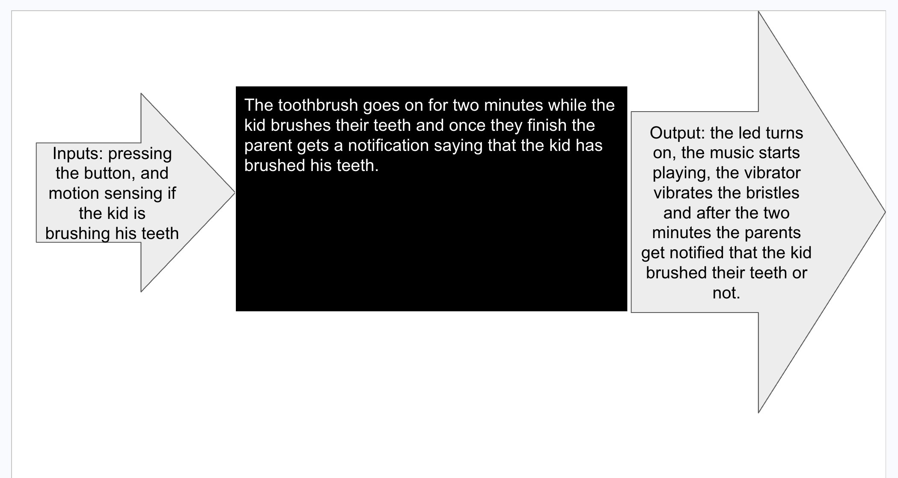
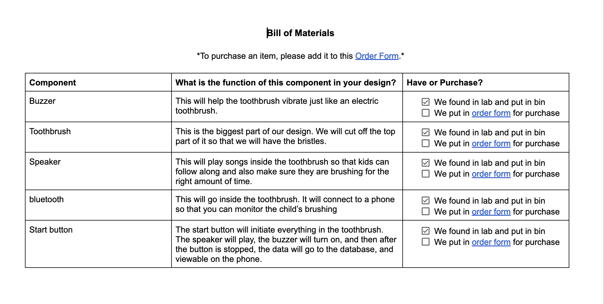
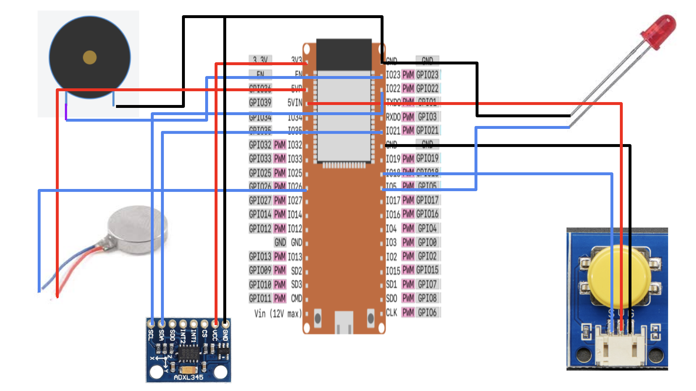
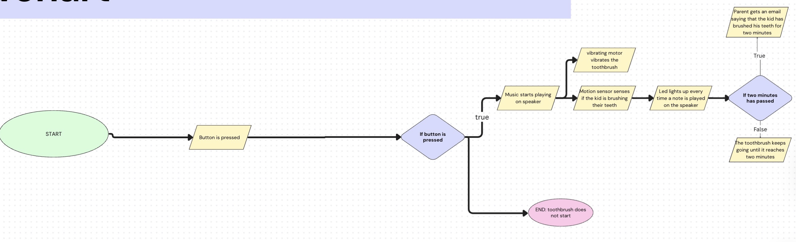
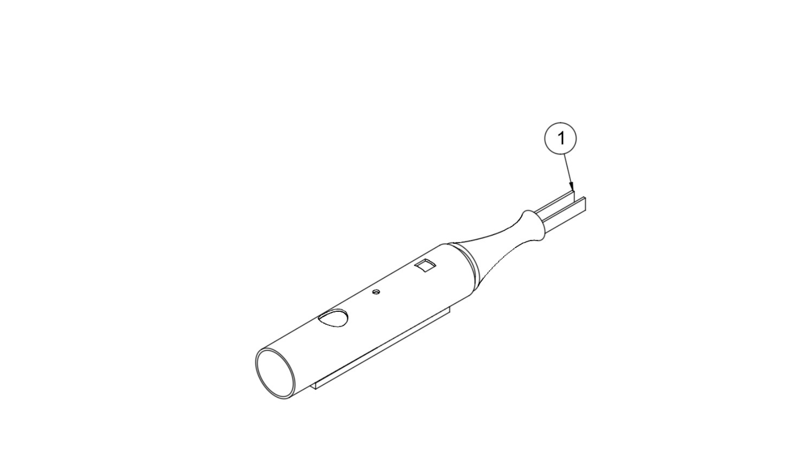
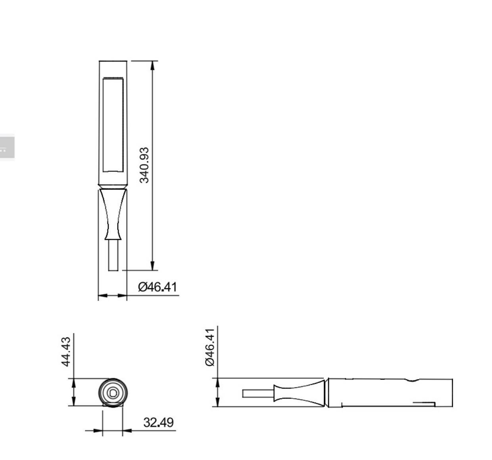
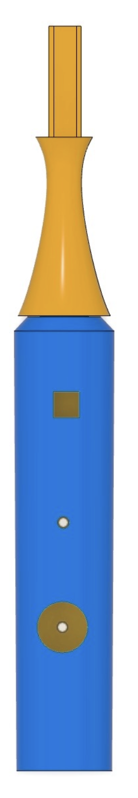

Final Concept Overview
Brush Buddy is a handheld toothbrush with an integrated speaker, button, LED indicator, vibration motor, and motion tracking system. The design encourages children to brush for the correct amount of time while giving parents a clearer way to know when brushing has been completed.
Video of Working Prototype
These videos show the Brush Buddy prototype working and demonstrate how the device responds when the user interacts with it.
Prototype Video 1
Prototype Video 2
System Block Diagram
This diagram shows how the input and output components work together inside Brush Buddy.

Bill of Materials with Costs
This bill of materials lists the major components used to build the Brush Buddy prototype and their costs.

Wiring Diagram
This wiring diagram shows how the Brush Buddy electronic components connect to the ESP32 microcontroller.

Programming Flowchart
This flowchart explains the logic of the program, including how the device starts, tracks brushing, and activates outputs.

CAD Model
This CAD model shows the digital 3D design of the Brush Buddy prototype.

CAD Drawings with Dimensions
These CAD drawings show the measured dimensions of the Brush Buddy design.

Photo Rendering
This photo rendering shows what Brush Buddy would look like as a finished product.
